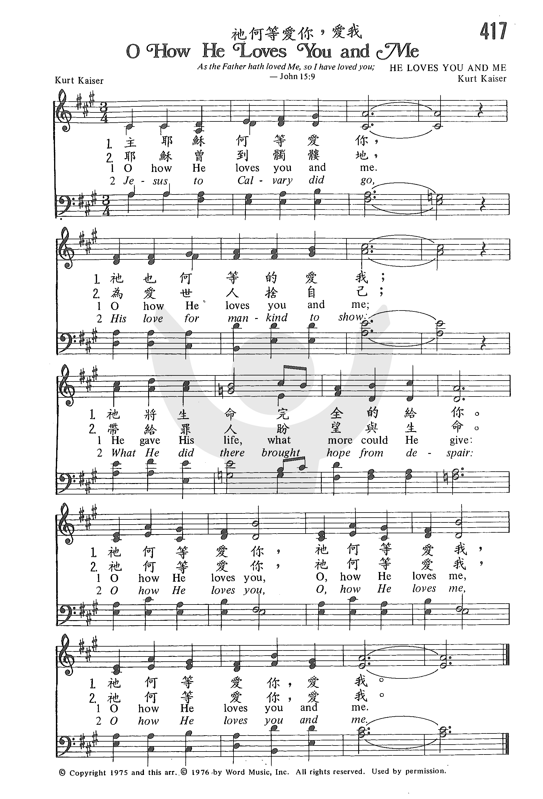
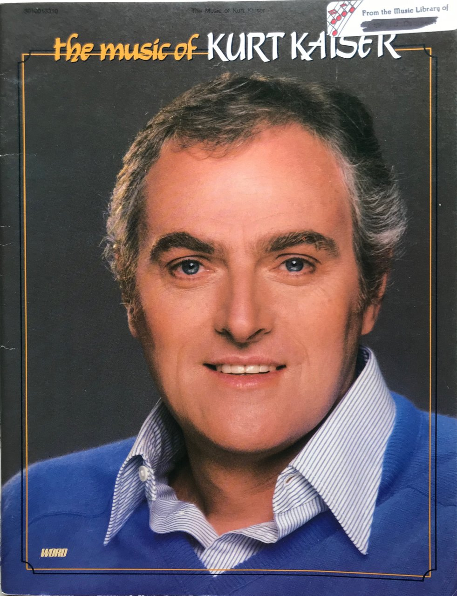

https://www.youtube.com/watch?v=F3lt5bMAy5E
|
|
|
|
Oh, how He loves you and me, |
1.請聽我說我何等愛你 |
|
https://www.zanmeishige.com/tab/25992.html?songbook=1&index=417 第417首 -

|
|
|
|
|
| Text: | Oh, How He Loves You and Me |
| Author: | Kurt Kaiser |
| Tune: | PATRICIA |
| Composer: | Kurt Kaiser |
| Short Name: | Kurt Kaiser |
| Full Name: | Kaiser, Kurt |
| Birth Year: | 1934 |
| Death Year: | 2018 |
Kurt Kaiser

was born December 17, 1934, in Chicago. He attended American Conservatory of Music and Northwestern University. He moved to Waco, Texas in 1959 in order to join Word Music, where he later worked as vice president and director of music. He arranged and produced several albums. He composed more than 300 songs, and with Ralph Carmichael developed Christian youth musicals. He was a longtime member of the Seventh & James Baptist Church in Waco, Texas. He later helped start Dayspring Baptist Church in Waco. He was an acclaimed pianist who accompanied George Beverly Shea at Billy Graham crusades. He received the Lifetime Achievement Award from the American Society of Composers, Authors and Publishers and was elected to the Gospel Music Hall of Fame. He died November 12, 2018, in Waco.
Dianne Shapiro, from obituary in "Baptist Standard" (https://www.baptiststandard.com/news/obituaries/obituary-kurt-kaiser/) and "Gospel Music Hall of Fame" (http://gospelmusichalloffame.org/kurt-kaiser/) accessed 2-8-2019
| Title: | PATRICIA |
| Composer: | Kurt Kaiser (1975) |
| Meter: | Irregular |
| Incipit: | 33456 71667 11233 |
| Key: | A♭ Major |
| Copyright: | © 1975 Word Music (A Div. of Word, Inc.) |
傳給人
Pass It On
一點星星之火，可以將火點燃起，
圍在火旁的人，立時便感到暖意；
真神慈愛極豐富，你經歷過之後，
也必願意將這慈愛，向每個人傳開。
春天何等美麗，新葉嫩綠滿樹上，
小鳥開始歌唱，萬花都爭先開放，
真神慈愛極豐富，你經歷過之後，
也必願意讚美歌唱，將主妙愛傳揚。
朋友，願你分享我已得到的喜樂，
你也可依靠祂，不論你境況如何；
我願登高山宣揚，向全世界宣告，
救主的愛已臨到，我要向人傳揚。
傳揚主耶穌已經救贖罪人。阿門。
主耶穌告訴我們，任何人因為門徒的名，只把一杯涼水給這小子中的一個喝，這人必得賞賜。
許多人生性慷慨，樂於在物質上給予和分享；但在傳福音上，就很難跨出這一步，因為人容易接受有形的物質，而難以相信無形的的救恩。
這首詩歌在70年代末，十分流行，到處可以聽到，但近年來似乎已銷聲匿跡。
它的作者是凱瑟（Kurt F. Kaiser,1934 - ）。
凱瑟原為熱門音樂作曲家及鋼琴手。 1969年，年輕的凱瑟，放棄了原先炙手可熱的事業，與卡瑪珂（Ralph Carmichael, 見三月四日）攜手合力完成了一部青年聖樂劇「實話實說」（Tell
It Like It）。
中英文聖詩集參考
英文歌名 Pass
It On
教會聖詩 478
新聖詩 236
恩頌聖歌 342
青年聖歌III 102
英文歌名 O
How He Loves You and Me
教會聖詩 417

Oh, How He Loves You and Me is a popular chorus that was very popular in churches in the 1980s and 1990s. This is one of the songs that children often learn, after Jesus Loves Me and Jesus Loves the Little Children.

Kurt Kaiser
The chorus to Oh, How He Loves You and Me was written by Kurt Kaiser, also well known for the song, Pass It On.
Kurt Kaiser was born in 1934 in Chicago, Illinois. He is an award winning songwriter of Contemporary Christian music and a member of the Gospel Hall of Fame. He has worked with many of the well known names in Christian music, including George Beverely Shea, Larnelle Harris, Joni Erickson Tada, Ethel Waters and Ernie Ford.
Kaiser said “I was 7 years old when one Sunday evening we were all gathered around the piano in the living room of our home, singing, as was our custom each week. I began having a real urge from the spirit of God to know him and to give my heart and life to Christ. My mother went with me to my bedroom, and we
knelt down by the bed and I accepted Christ into my life.”
O How He Loves You and Me became one of his most popular songs.
Often we hear a phrase that might inspire us and that seems to be the origin behind O How He Loves You and Me.

O How He Loves You and Me
Kurt Kaiser provides the following account behind the writing of this song:
“Through the years I have been in the habit of keeping my ears tuned to things that people say, a phrase that may give me an idea for a song. I’ll write it down quickly. Occasionally, I will pull these things out and look at them. One day I came across this line, “Oh how he loves you and me,” and I wrote it down. I remember very well writing it across the top of a piece of manuscript paper, and that’s all I had.”
“In 1975, I sat down to think about that phrase and the whole song quickly came to me. I could not have spent more than 10 or 15 minutes writing the whole of it. That’s how rapidly it all came, the lyrics and the melody together. I sent it off to secure a copyright. I could not believe what came back in the mail.”
“The Copyright Office in Washington said that there was not enough original lyric to

Jesus to calvary did go
His love for mankind to show
warrant the granting of a copyright. I was extremely disappointed because I knew the song was very singable. A couple of days went by and I decided to write a companion verse, or a second set of lyrics. I sent it back to Washington, and this time I got the copyright.”
The popularity of O How He Loves You and Me spread throughout the churches and eventually found it’s way into the hymnal.
In the late 1960s and 1970s, Kaiser was an instrumental part of the Christian youth movement and wrote several Christian rock musicals. He has continued to be a well known presence in the Christian music industry through the years. He is the choir director at Day Spring Baptist Church, in Waco, Texas, which he helped found.
O How He Loves You and Me is a wonderful reminder of God’s love for us.
How do you remind yourself of God’s love?
https://dianaleaghmatthews.com/o-how-he-loves-you-and-me/#.YiML1OhBzIU
For more than 40 years, his name has been synonymous with Christian keyboard
artistry, songwriting, conducting and arranging. He received an honorary
doctorate of sacred music from Trinity College in Illinois and an honorary
doctorate of humane letters from Baylor University in Waco, Texas.
Kaiser was born in the "Windy City," Chicago, Illinois, in 1934. He said, "I was
7 years old when one Sunday evening we were all gathered around the piano in the
living room of our home, singing, as was our custom each week. I began having a
real urge from the spirit of God to know him and to give my heart and life to
Christ. My mother went with me to my bedroom, and we knelt down by the bed and I
accepted Christ into my life."
From the young age of 4, he had private piano teachers. This continued
throughout his high school years and on through college. It was not until 1969,
that he got the opportunity to try his hand at serious writing. Kaiser has now
written more than 400 songs.
Following is his account of the writing of his most popular song:
"Through the years I have been in the habit of keeping my ears tuned to things
that people say, a phrase that may give me an idea for a song. I'll write it
down quickly. Occasionally, I will pull these things out and look at them. One
day I came across this line, "Oh how he loves you and me," and I wrote it down.
I remember very well writing it across the top of a piece of manuscript paper,
and that's all I had."
Story from AstraZeneca
Lung cancer through a 50 mm lens
This photographer's emotion-filled photographs are challenging the stigma of
living with lung cancer.
See More →
"In 1975, I sat down to think about that phrase and the whole song quickly came
to me. I could not have spent more than 10 or 15 minutes writing the whole of
it. That's how rapidly it all came, the lyrics and the melody together. I sent
it off to secure a copyright. I could not believe what came back in the mail."
Your stories live here.
Fuel your hometown passion and plug into the stories that define it.
Create Account
"The Copyright Office in Washington said that there was not enough original
lyric to warrant the granting of a copyright. I was extremely disappointed
because I knew the song was very singable. A couple of days went by and I
decided to write a companion verse, or a second set of lyrics. I sent it back to
Washington, and this time I got the copyright."
"Oh How He Loves You and Me" has traveled far and wide and into the hearts of
millions of people. Many hymnals and chorus books have included it, as well as
numerous choral collections. In the opinion of this writer, the second set of
lyrics, or the second verse gives marvelous support to the original song. The
message Jesus to Calvary did go... showing just how much he loves you and me, is
truly soul-stirring.
"And we have known and believed
the love that God hath to us. God is love;
and he that dwelleth in love dwelleth in God,
and God in him." -1 John 4:16